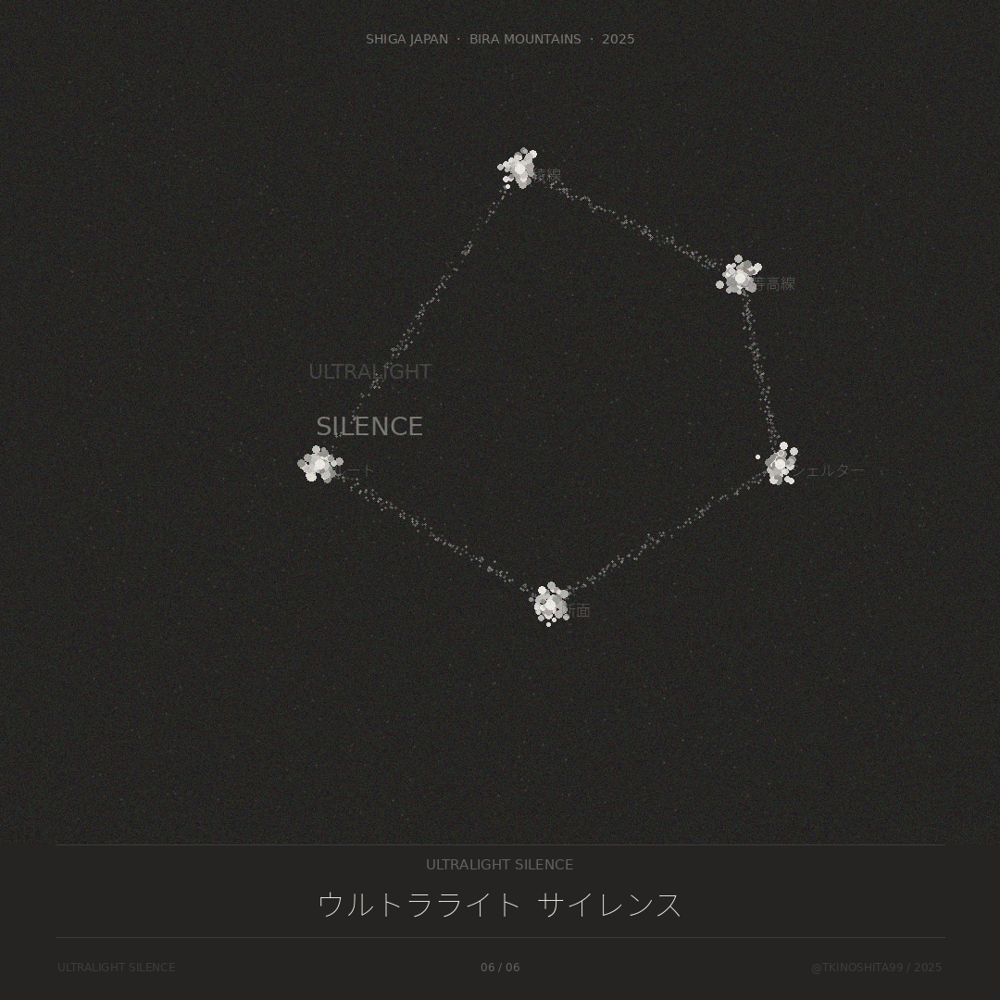
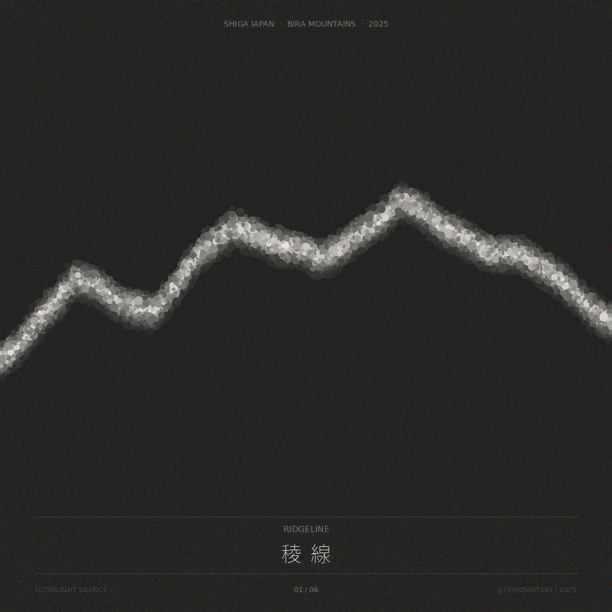
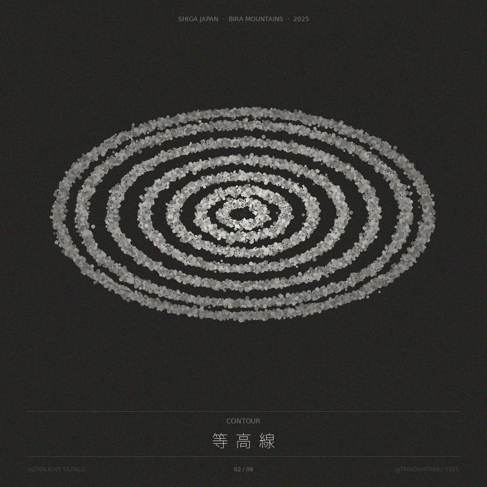
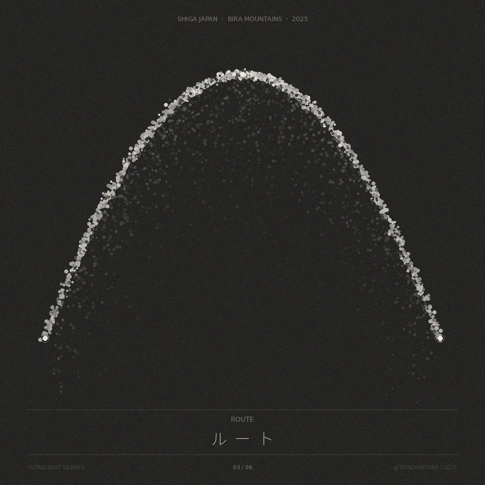
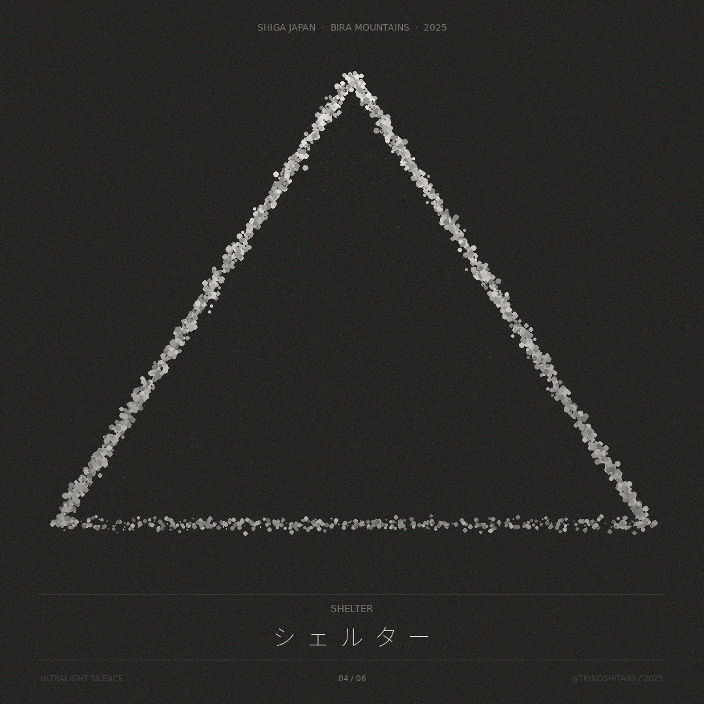
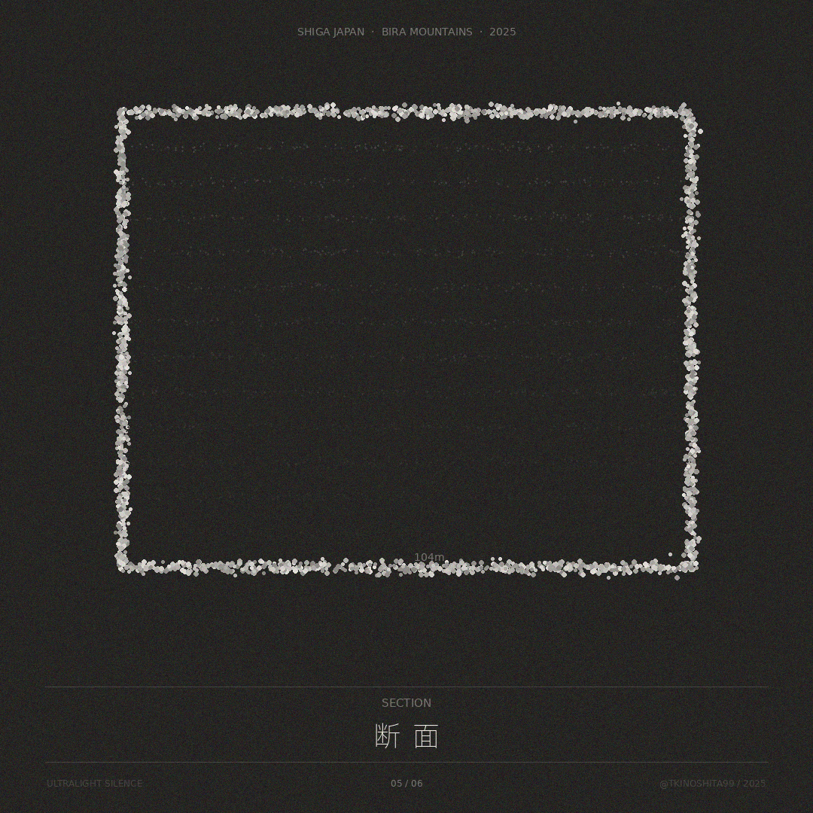

CASE 02 — FIELD × DESIGN / 2025
ULTRALIGHT SILENCE
The lighter you go, the quieter it gets.
比良山系のソロULハイクを、データビジュアライゼーションに翻訳した。
稜線、等高線、ルート、シェルター、断面——
山に持ち込むものすべてに、意味がある。
SCROLL ↓
OVERVIEW — 問いと概要
ウルトラライトハイキングは、装備の重量を極限まで削る思想だ。しかしそれは単なる軽量化ではない。何を持ち込み、何を置いていくかの選択——その哲学が、山との対話を深くする。
ULTRALIGHT SILENCEは、比良山系でのソロULハイク体験をデータビジュアライゼーションとして記録したプロジェクト。稜線の形、等高線の密度、ルートの軌跡、シェルターの最小形——それぞれが、フィールドの哲学を視覚に翻訳したものだ。
点群という手法は、輪郭だけを描く。余白が大きいほど、そこにあるものの意味が際立つ。引き算のデザインと、引き算のハイキングは、同じ問いを持っている。
PROCESS — 翻訳の過程
INPUT — 原文
TRANSLATE — 翻訳
OUTPUT — 訳文
SERIES — 6枚の翻訳
点の密度が、静けさの量だ。比良山系のデータを点群で再構成した6枚。暗い背景に白い点が集まるとき、山の輪郭が現れる。






DETAIL — 各作品の解説
00 / 06
TITLE CARD
ノイズを削ぎ落とした先に、
山との対話が始まる。
6枚の結語。シリーズ全体のルート——稜線・等高線・ルート・シェルター・断面——が、ひとつの星座として配置されている。BIWAKO SILENCEから山へ。水から稜線へ。深さから軽さへ。同じ問いを、違う場所で。
01 / 06
RIDGELINE
持ち物を削れば削るほど、
山がはっきり見えてくる。
比良山系、早朝5時。稜線が現れた瞬間、自分がどれだけ小さいかを知った。でもその小ささが、ちょうどよかった。点の密度が、静けさの量だと思っている——GPSデータから抽出した稜線の形を、点群で再構成した。
02 / 06
CONTOUR
地図で何度も見ていた等高線が、
その日はじめて、足の裏の感覚になった。
数字じゃなく、高度差が体に入ってくる瞬間がある。ギアを削るのも、たぶん同じだ。スペックを読んでいるうちは、まだわかっていない。背負って、稜線を歩いて、はじめて意味を持つ。等高線を点群の楕円として積層した。
03 / 06
ROUTE
出発点と帰着点が同じとき、
それはループではなく、円環だ。
ハイクのルートを俯瞰すると、弧を描く。登りと下りは同じ線ではなく、それぞれの意思を持った軌跡だ。出発と帰還の2点が光る——その間に積み重なった選択の記録が、点の密度として現れる。
04 / 06
SHELTER
山の中で、テントやシェルターに
何グラム許すか。
風と雨だけを遮る、最小限の三角。
それ以上は、余分だ。
シェルターの断面を点群で描くと、純粋な三角形になる。How many grams should a roof weigh? ULハイカーが問い続けるその問いを、最小の幾何学として可視化した。底辺の点列が地面との境界を示す。
05 / 06
SECTION
重さを、断面図で見たことがあるか。
外側はひとつの面。
中に何層もの選択が、積み重なっている。
軽さとは、削ることではなく、必要なものだけを残すことだ。Lightness isn't about removing. It's about keeping only what belongs. バックパックの断面——104mという注記が、琵琶湖との共鳴を示している。
INSIGHT — このプロジェクトから得たこと
01
引き算は、翻訳の方法だ
ULハイキングもデザインも、削る行為は加える行為より難しい。何を残すかを決めることが、体験の設計そのものだ。
02
点の密度が、意味の密度になる
点群表現では、密度の高い場所に意味が集まる。稜線の頂点、等高線の中心——視線が自然に向かう場所に、体験の核がある。
03
フィールドと思想は分離しない
山を歩きながら考えたことが、そのままデザインの問いになった。体験と設計の間に距離がないとき、翻訳は最も正確になる。